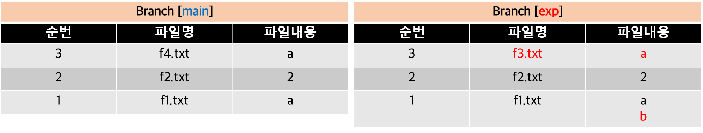
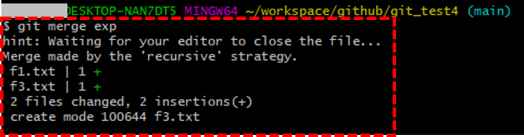
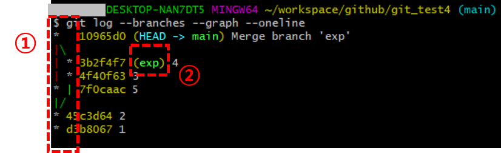
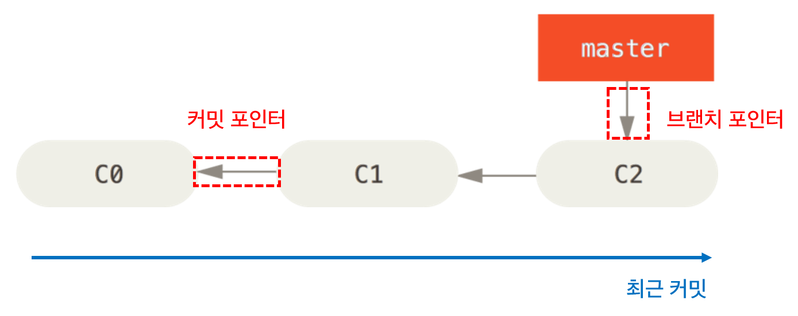

출처 : https://light-tree.tistory.com/230
각각의 branch로 나누어 작업을 하다가 하나로 통합해야 하는 순간이 찾아오는데, 이때 사용하는 명령어가 git merge이다.
프론트엔드와 백엔드를 나누어 작업을 하고, 기능 테스트를 위해 통합하는 경우가 대표적인 사례이다. 조금 더 쉬운 사례로는 조별과제로 PPT를 분담해서 작성하다가 하나로 합치는 것으로 이해할 수 있다.
이때, 서로 작업한 내역이 겹치거나 중복되는 부분이 하나라도 있다면 충돌을 일으키므로 각자의 영역을 철저하게 분리해서 작업하는 것이 중요하다.

현재 포스팅에서는 이전 포스팅의 내용을 이어서 작성하고 있다. 위의 도표는 현재 각 브랜치에 가장 최근에 커밋된 파일과 파일 내용을 정리한 것이다. 이제 우리는 이 2개의 브랜치를 main 브랜치에 합치려고 한다.
main 브랜치에 합치려면 다음의 명령어를 실행해서 main 브랜치로 전환한다.
$ git checkout main
그 다음, exp 브랜치를 main으로 합치려고 하는 것이기 때문에 다음의 명령어를 실행한다.
$ git merge exp
간단한 커밋 메세지를 남기면 다음과 같이 성공적으로 명령어가 실행된다.

$ git log --branches --graph --oneline
위의 명령어를 입력해서 현재 브랜치의 상태를 살펴보자.

exp 브랜치의 커밋(‘4’)과 main 브랜치의 커밋(‘5’)이 main 브랜치로 합쳐졌다는 것을 확인할 수 있다.
만약 특정 브랜치가 필요해지지 않으면 다음의 명령어를 통해 브랜치를 삭제할 수 있다.
$ git branch -d '삭제할 브랜치 이름'
상황에 따라 2가지 방식으로 작동 하는데, 위와 같이 간단한 상황이 아닌 복잡한 상황에서의 병합을 살펴보자. 여기서부터는 git 공식 사이트에 기재된 사진을 활용해서 설명하려고 한다.

위의 사진에 대한 이해를 돕자면, 오른쪽으로 갈수록 최근 커밋을 의미한다.
새롭게 생성된 브랜치와 main 브랜치가 별도의 커밋 작업 없이 병합되는 방식이다.